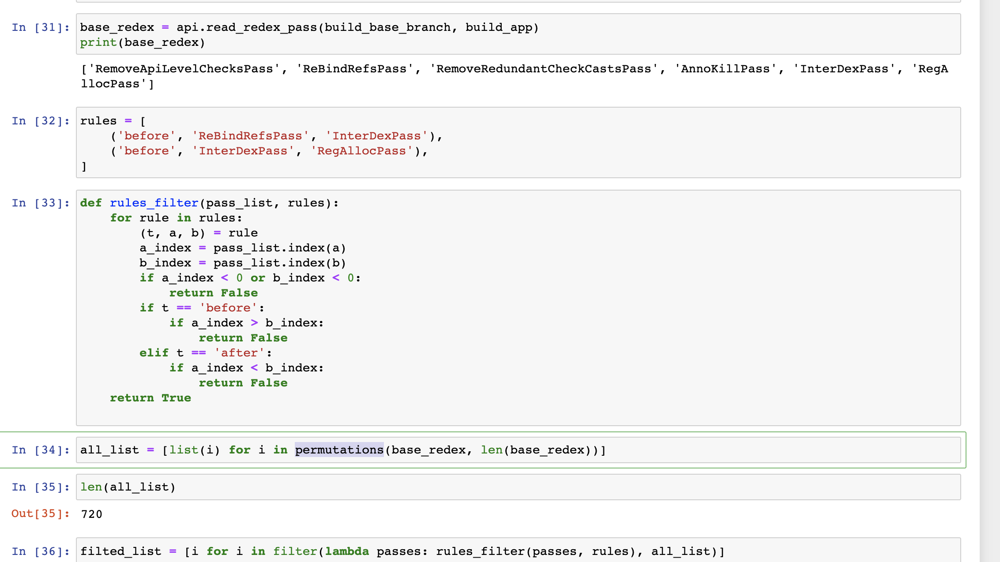
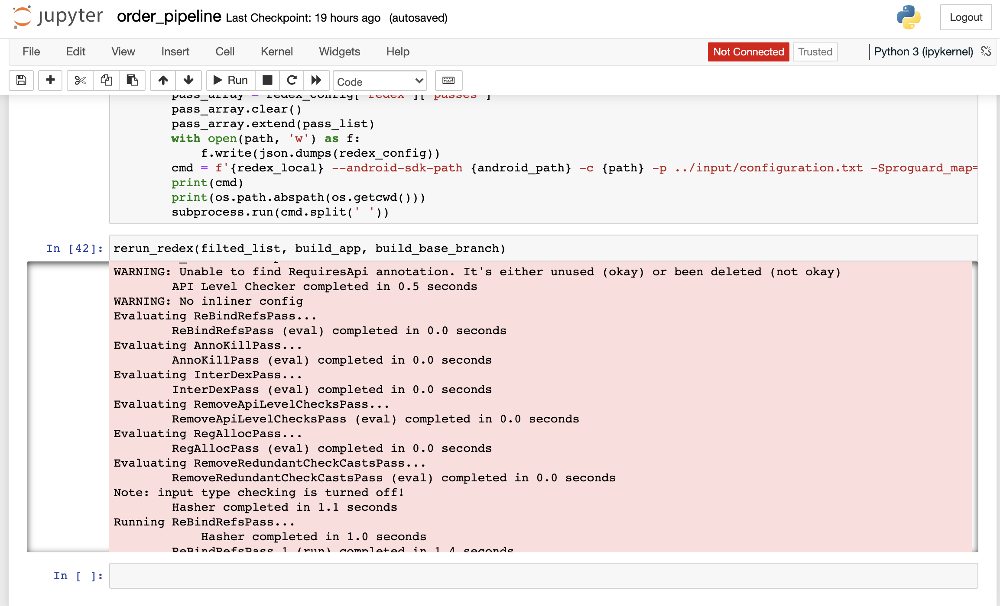
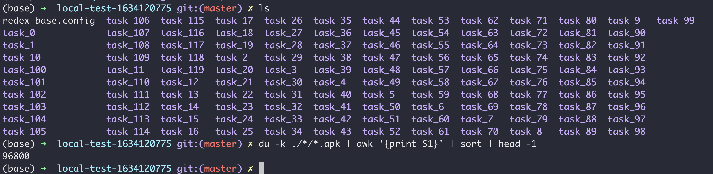

  
Implement in simple
- Pre download universal.apk, mapping.txt, configuration.txt and save in this project.
- Read the original redex.config , and generate all passes full permutations.
- Filter out some passes with the wrong relationship (eq: InterDexPass before RegallocPass )
- Generate tasks and run them in devbox server.
Result now
Currently there are so few passes used in Tik Tok and most of them have relative relationships that there is currently no significant difference.
Future
- Change full permutation to a heuristic algorithm or machine learning algorithm